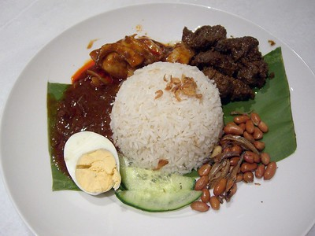

Home
Malaysian Nasi Lemak

Photo by Alpha from Flickr
Description
A staple Malaysian dish of coconut rice, side of hot chilli paste (sambal), topped with crispy anchovies and fried peanuts,
cucumbers, egg. A dish that can be eaten any time of day for any occasion.
Ingredients
Rice
- 2 cups of coconut milk
- 2 cups of water
- 2 cups of long grain rice, rinsed and drained
- 1 (1/2 inch) fresh ginger, peeled and thinly sliced
- 1/4 teaspoon ground ginger
- 1 whole bay leaf
- Salt to taste
Garnish
- 1 cup of oil for frying
- 1 cup of raw peanuts
- 1 cup of achovies, washed
- 1 medium cucumber, sliced
Sauce
- 2 tablespoon of vegetable oil
- 1 medium onion, sliced
- 3 medium shallots, thinly sliced
- 2 tbs chilli paste
- 1 (4 ounce) package white achovies, washed
- 1/4 cup of tamarind juice
- 3 tbs of white sugar
- Salt to taste
Steps
- Make rice. Stir coconut milk, water, rice, fresh ginger, ground ginger, bay leaf and salt together in saucepan.
- Cover and bring to a boil over medium heat. Reduce heat and simmer until tender. Discard bay leaf and keep rice warm before serving.
- Make the garnish. Heat 1 cup of vegetable oil in large skillet over medium-high heat. Stir in peanuts and cook briefly, until lightly browned. Remove peanuts onto paper towels.
- In the same oil, fry 1 cup of achovies until crips, and remove onto paper towel.
- Make the sauce. Heat oil in clean skillet. Stir in onion, shallots, and garlic; cook until fragrant about 2 minutes.
- Mix in chilli paste and cook for 10 minutes, stirring occasionally; if mixture is dry, add in water as needed.
- Stir in remaining achovies and cook for 5 minutees. Stir in tamarind juice, sugar, salt; simmer until sauce is thick.
- Prepare plate with warm rice, sauce and topped with fried anchovies, peanuts, sauce, hard-boiled eggs and sliced cucumber. Serve immediately.